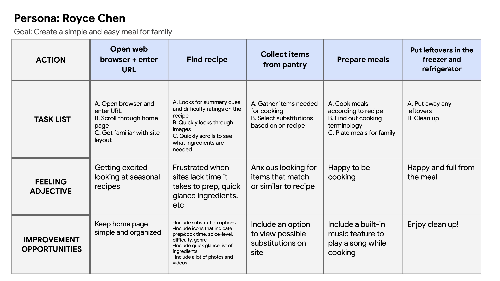
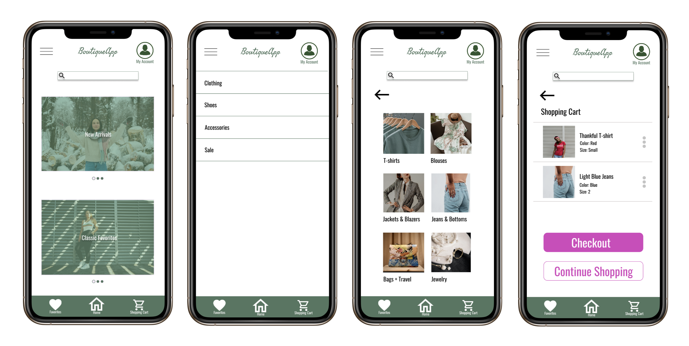
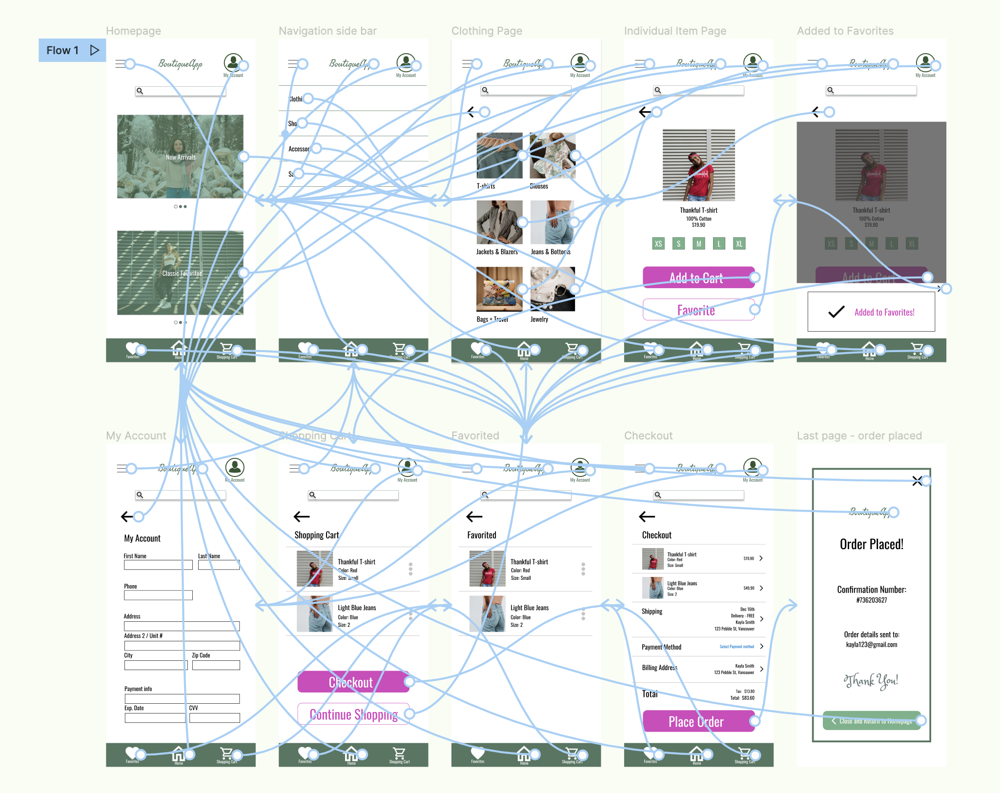

Case Study:
Carrots
A cooking app for kids
Project Overview
The problem
There is a lack of user-friendly cooking content and recipes for kids and teenagers to use. Food websites and apps currently on the market have long, wordy content where users have to dig to get information on groceries, “how-to” videos and info on allergens.
The goal
Design a one-stop cooking app for kids to fulfill all their cooking needs. The app will contain verbiage that is easy to understand & user-friendly, while offering important features, like: an allergen list, timer, music playlist, a grocery list and more.
The product
Carrots is an app focusing on providing healthy & easy recipes for kids. The app and web-browser also provide a one-stop hub for access to all things cooking: grocery list, cooking tips, videos and more to make it convenient for kids to prep and cook in an organized manner. Carrots’ primary user include kids aged from 10+, who enjoy cooking individually or with a parent.
My role
UX designer leading the dedicated mobile app and web design across multiple platforms, from conception to delivery
Responsibilities
Conducting interviews, paper and digital wireframing, low and high-fidelity prototyping, conducting usability studies, consideration of accessibility needs, iterating on designs, determining the app’s information architecture, and creating a responsive design.
Project duration
February 2022 - March 2022
Understanding the user
I used Carrots’ data on cooking apps and observations gained from my competitive audit to develop interview questions. During the user interviews, most participants were frustrated with the lack of user-friendly sites that kids could use; they didn’t want a food service to just deliver pre-made meals, but wanted their kids to be able to learn to cook and have fun doing so. Their feedback of wanting simple features surrounding all aspects of cooking made it clear what Carrots’ content and design would aim for.
User pain points
1. Lack of Media
Recipes often did not include enough photo and video content to aide the step-by-step instruction
2 Gap in kids' age
Platforms catered too closely to either kids aged 7-12, missing the target in intermediate, high school, and college-level students
3 Clutter
Sites spoke too much of the history of the food, without offering concise instructions on how to prepare them
Persona & Problem statement
Royce Chen is a middle-school student who enjoys cooking, who needs to access healthy recipes with quick & easy step-by-step instructions with lots of pictures and videos because he’d like to make them on his own for his family.
User journey map
Mapping Royce's journey revealed how helpful it would be to have images and videos for each step, as well as providing cues on the approximate cook time.
Starting the design
Paper wireframes
I used a quick ideation process to sketch ideas for a dedicated mobile app. My focus was kept on creating a simple app, while keeping in mind all the features (and lack thereof) from the competitive audit to include in the design.

Digital wireframes
After sketching many different ideas for the home page, I decided on a design with big, bold images to keep users engaged with the app.
The icons at the top of the app allow for users to understand very quickly what the recipe entails. The additional "share" and "favorite" icon are present to allow users to access them for later use.
Usability Study Findings
The usability study directed the design needs from wireframes to mockups, and provided a lot of insight of what users wanted to see in a cooking app.
1. Features
Users liked that this app had everything they needed for cooking
2. Back to Home
Users found that the "Back to Home" button at the bottom of the Recipes page should be applied to all pages
3. Recipes Page
Users found that the end of the "Selected Recipe" page was too abrupt and were confused on where to go at the end
Refining the design
Mockups
Users were confused to find no way to view the recipe displayed here and thought it would be helpful to include a “View Recipe” button for each recipe. This idea was implemented in the high-fidelity design.
Originally, I had the category of time grouped in with the rest of the types of cuisine, which users overlooked and expressed wanting a more definitive space for timed meals. In the second mockup, I included a separate space for this.
Accessibility considerations
WCAG
WCAG contrast between text and color were cross-checked to ensure readability
Text-to-Speak
Implemented an “Accessibility” section in the “My Account” tab for users to select “Select to Speak” or “TalkBack” options
Buttons
Large, bold call-to-action buttons were used to grab users' attention
Refined designs
High-fidelity prototype
The final high-fidelity prototype is a lot cleaner and simpler for users to browse items, add to cart, and checkout.
View the BoutiqueApp high-fidelity prototype here
Going forward
Takeaways
Impact
The app allows individuals to feel comfortable in purchasing items that will fit well, and confident that the store is thorough in sharing item details.
One quote from peer feedback:
“The app made it easy for me to shop online! I’m confident
that what will arrive at my doorstep is something I won’t have
to return later in-store.”
What I learned
I’ve learned to keep design elements simple. The layout and call-to-action buttons should be clear and clean for a user to press buttons with minimal confusion.